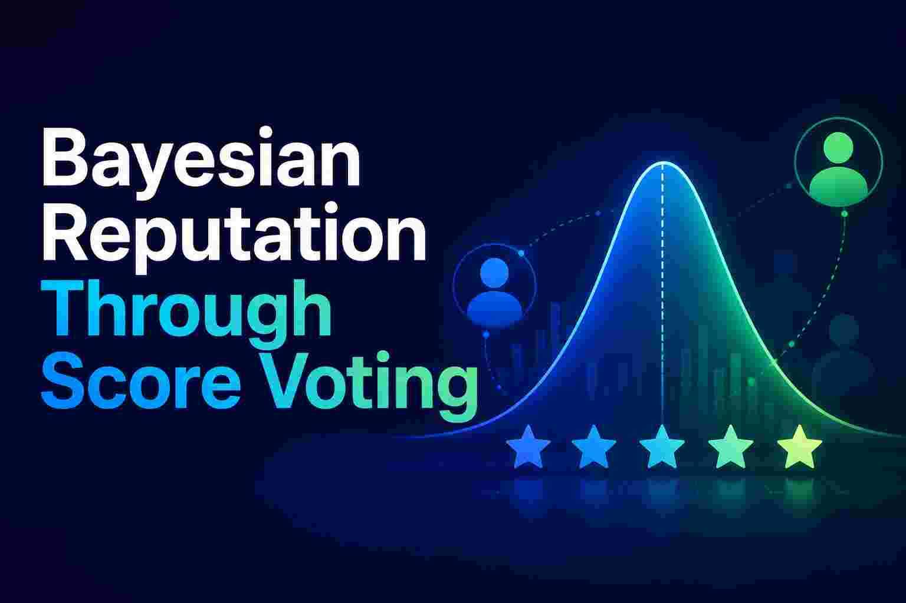
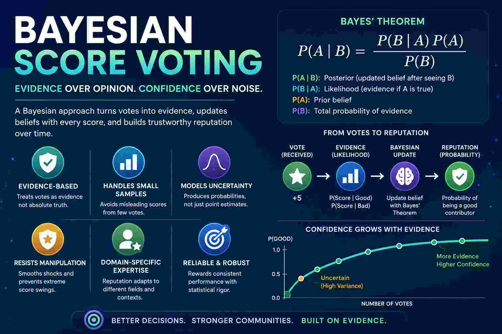

Bayesian Reputation Through Score Voting
Date: 25-06-2026

Evidence-Based Reputation
A major advantage of a Bayesian score voting reputation system is that it treats votes as evidence rather than truth. In a normal score voting system, if a person receives a single 5/5 score, they immediately obtain a perfect average score of 5. In a Bayesian system, the score is combined with prior knowledge and uncertainty. A few positive votes increase confidence gradually, while a large body of evidence is needed before someone is considered highly reputable. This makes the system more stable and resistant to manipulation.
Handling Small Sample Sizes
Another advantage is that Bayesian reputation naturally handles small sample sizes. Traditional averages often produce misleading results when only a few people have voted. For example, someone with one 5-star rating may rank above someone with one hundred 4.8-star ratings. A Bayesian approach accounts for the amount of evidence behind the score, preventing new participants from immediately overtaking well-established contributors based on a handful of votes.
Modeling Uncertainty and Confidence
Bayesian systems also provide a natural way to model uncertainty. Instead of saying “Alice’s reputation is 4.2,” the system can estimate the probability that Alice is a trustworthy or competent contributor. As more votes arrive, uncertainty decreases and the estimate becomes more reliable. This is particularly useful in governance systems where decisions should be based not only on popularity but also on confidence in the underlying assessment.
Resistance to Reputation Shocks
Another benefit is resistance to reputation shocks. In a simple averaging system, one extremely positive or negative vote can significantly alter someone’s score. Bayesian updating smooths these changes because each new vote is weighed against all previous evidence. Reputation evolves gradually, making it harder for coordinated attacks, personal disputes, or temporary popularity swings to distort the system.
Support for Domain-Specific Expertise
Finally, Bayesian score voting works well with domain-specific expertise. A person may have strong reputation in economics but little reputation in agriculture or engineering. Separate Bayesian reputations can be maintained for each field, and votes become evidence for expertise within that domain. This is particularly valuable for knowledge-based governance, where influence should come from demonstrated competence and consistent evaluation over time rather than from a single global popularity score.
Combining Expressiveness with Statistical Rigor
In short, Bayesian score voting combines the expressiveness of score voting with the statistical rigor of evidence accumulation. It rewards consistent performance, handles uncertainty, reduces manipulation, and produces reputation scores that are generally more reliable than simple averages.

We will use the Beta Reputation method to calculate reputation, which is explained at the end.
Walk Through Bayesian Reputation
Let’s walk through a complete Bayesian reputation calculation using score voting.
Suppose we want to estimate:
What is the probability that Alice is a good contributor?
Initially we know nothing.
Step 1: Prior Belief
Assume:
- P(Good) = 0.5
- P(Bad) = 0.5
Before seeing any votes, Alice has a 50% chance of being good.
Step 2: Define Score Distributions
Suppose historical data shows:
| Score | P(Score | Good) | P(Score | Bad) |
|---|---|---|
| 5 | 0.40 | 0.05 |
| 4 | 0.30 | 0.10 |
| 3 | 0.15 | 0.20 |
| 2 | 0.10 | 0.25 |
| 1 | 0.05 | 0.40 |
Meaning:
- Good contributors receive a 5-star score 40% of the time.
- Bad contributors receive a 5-star score only 5% of the time.
Step 3: Alice Receives a Score of 5
We want:
P(Good | Score=5)
Use Bayes’ theorem:
\[ P(A \mid B) = \frac{P(B \mid A)P(A)}{P(B)} \]
Substitute values:
Numerator:
P(5 | Good) × P(Good)
0.40 × 0.50
= 0.20
Denominator:
P(5)
=
P(5 | Good)P(Good)
+
P(5 | Bad)P(Bad)
=
0.40×0.50
+
0.05×0.50
=
0.225
Posterior:
0.20 / 0.225
= 0.8889
Result:
P(Good | Score=5)
=
88.89%
One strong vote increased confidence from:
50%
→
88.89%
Step 4: Alice Receives Another 5
Prior becomes:
P(Good)=0.8889
P(Bad)=0.1111
Again apply Bayes.
Numerator:
0.40 × 0.8889
=
0.3556
Denominator:
0.40×0.8889
+
0.05×0.1111
=
0.3611
Posterior:
0.3556 / 0.3611
=
0.9846
Now:
98.46%
Step 5: Alice Receives a Score of 2
Now evidence becomes mixed.
Prior:
Good = 0.9846
Bad = 0.0154
From the table:
P(2|Good)=0.10
P(2|Bad)=0.25
Numerator:
0.10 × 0.9846
=
0.09846
Denominator:
0.10×0.9846
+
0.25×0.0154
=
0.10231
Posterior:
0.09846 / 0.10231
=
0.9624
Reputation falls slightly:
98.46%
→
96.24%
One bad score does not completely destroy reputation.
Complete Beta-Reputation Calculation with Sorted Score Votes
Overview: Beta-Reputation Model
The Beta-reputation system is a simplified Bayesian approach that:
- Treats votes as evidence (positive or negative)
- Maintains α (positive evidence) and β (negative evidence) counters
- Computes reputation as: Reputation = α / (α + β)
- Uses the Beta distribution to model confidence
Step 1: Define Vote-to-Evidence Conversion
There are multiple ways to convert scores to evidence.
Approach: Score Magnitude as Evidence Weight (Recommended)
Each vote contributes evidence equal to its absolute distance from zero:
- +5 vote → adds 5 to α
- +4 vote → adds 4 to α
- +3 vote → adds 3 to α
- +2 vote → adds 2 to α
- +1 vote → adds 1 to α
- 0 vote → adds 0 to both (neutral)
- -1 vote → adds 1 to β
- -2 vote → adds 2 to β
- -3 vote → adds 3 to β
- -4 vote → adds 4 to β
- -5 vote → adds 5 to β
Step 2: Aggregate Votes (Score Magnitude Method)
Vote data:
| Vote | Count | Evidence per vote | Total α contribution | Total β contribution |
|---|---|---|---|---|
| +5 | 10 | 5 | 10 × 5 = 50 | — |
| +4 | 8 | 4 | 8 × 4 = 32 | — |
| +3 | 6 | 3 | 6 × 3 = 18 | — |
| +2 | 5 | 2 | 5 × 2 = 10 | — |
| +1 | 4 | 1 | 4 × 1 = 4 | — |
| 0 | 3 | 0 | — | — |
| -1 | 2 | 1 | — | 2 × 1 = 2 |
| -2 | 3 | 2 | — | 3 × 2 = 6 |
| -3 | 2 | 3 | — | 2 × 3 = 6 |
| -4 | 1 | 4 | — | 1 × 4 = 4 |
| -5 | 0 | 5 | — | 0 × 5 = 0 |
Sum positive evidence:
Σα_votes = 50 + 32 + 18 + 10 + 4 = 114
Sum negative evidence:
Σβ_votes = 2 + 6 + 6 + 4 + 0 = 18
Step 3: Add Prior Belief
Start with a weak prior (uninformed):
α_prior = 1
β_prior = 1
(This represents: 50% chance of good, 50% chance of bad, before seeing any votes)
Step 4: Calculate Total Evidence
α_total = α_prior + Σα_votes
= 1 + 114
= 115
β_total = β_prior + Σβ_votes
= 1 + 18
= 19
Total evidence = α_total + β_total = 115 + 19 = 134
Step 5: Calculate Point Estimate Reputation
Reputation = α_total / (α_total + β_total)
= 115 / 134
= 0.8582
= 85.82%
Result: The contributor has an 85.82% reputation score.
Step 6: Calculate Confidence (Variance & Confidence Interval)
The Beta distribution provides a natural confidence model. The variance is:
$$\text{Variance} = \frac{\alpha \beta}{(\alpha + \beta)^2 (\alpha + \beta + 1)}$$
Calculation:
Variance = (115 × 19) / (134² × 135)
= 2185 / (17956 × 135)
= 2185 / 2424060
= 0.000901
Standard deviation = √0.000901 = 0.0300 = 3.00%
95% Confidence Interval
Using the Beta distribution (exact method), the 95% credible interval is approximately:
Lower bound ≈ 0.8582 - (1.96 × 0.0300)
≈ 0.8582 - 0.0588
≈ 0.7994 = 79.94%
Upper bound ≈ 0.8582 + (1.96 × 0.0300)
≈ 0.8582 + 0.0588
≈ 0.9170 = 91.70%
Confidence interval: 85.82% ± 5.88% = [79.94%, 91.70%]
Step 7: Odds and Log-Odds
Convert the reputation to odds:
Odds = α / β
= 115 / 19
= 6.053
Interpretation: For every 1 unit of negative evidence, there are 6.053 units of positive evidence.
Log-odds (useful for machine learning models):
Log-odds = ln(α / β)
= ln(115 / 19)
= ln(6.053)
= 1.800
Step 8: Interpretation: What Does 85.82% Mean?
In the Beta model, the reputation represents the probability that the next vote will be positive.
If random person votes next:
- P(next vote is positive) ≈ 85.82%
- P(next vote is negative) ≈ 14.18%
Distribution of next vote:
- ~86% chance of positive
- ~14% chance of negative
- Breakdown of positive: 43% of +5, 29% of +4, etc. (based on historical ratios)
Comparison: Three Conversion Methods
Let me show how different conversion approaches yield different results:
Method A: Score Magnitude (used above)
α = 115, β = 19
Reputation = 85.82%
Range = [79.94%, 91.70%]
Method B: Binary (Positive/Negative Only)
Treat all positive as +1, all negative as -1:
Positive votes = 10 + 8 + 6 + 5 + 4 = 33
Negative votes = 2 + 3 + 2 + 1 + 0 = 8
Neutral = 3 (ignored)
α = 1 + 33 = 34
β = 1 + 8 = 9
Reputation = 34 / (34 + 9) = 34 / 43 = 0.7907 = 79.07%
Variance = (34 × 9) / (43² × 44) = 306 / 81356 = 0.00376
StdDev = 0.0613 = 6.13%
95% CI = 79.07% ± 12.0% = [67.07%, 91.07%]
Difference: Binary method gives lower reputation (79.07% vs 85.82%) and wider uncertainty because it ignores that +5 votes are stronger than +1 votes.
Method C: Squared Score Magnitude (Emphasizes Extremes)
Use squared distances from zero:
Positive:
10 × 5² = 10 × 25 = 250
8 × 4² = 8 × 16 = 128
6 × 3² = 6 × 9 = 54
5 × 2² = 5 × 4 = 20
4 × 1² = 4 × 1 = 4
Σα_votes = 456
Negative:
2 × 1² = 2
3 × 2² = 12
2 × 3² = 18
1 × 4² = 16
0 × 5² = 0
Σβ_votes = 48
α = 1 + 456 = 457
β = 1 + 48 = 49
Reputation = 457 / 506 = 0.9033 = 90.33%
Variance = (457 × 49) / (506² × 507) = 22393 / 129825042 = 0.000173
StdDev = 0.0132 = 1.32%
95% CI = 90.33% ± 2.58% = [87.75%, 92.91%]
Difference: Squared method gives higher reputation (90.33% vs 85.82%) and tighter confidence because extreme votes carry more weight.
Summary Table: All Three Methods
| Metric | Method A (Magnitude) | Method B (Binary) | Method C (Squared) |
|---|---|---|---|
| α | 115 | 34 | 457 |
| β | 19 | 9 | 49 |
| Reputation | 85.82% | 79.07% | 90.33% |
| Std Dev | 3.00% | 6.13% | 1.32% |
| 95% CI | [79.94%, 91.70%] | [67.07%, 91.07%] | [87.75%, 92.91%] |
| Odds α:β | 6.05:1 | 3.78:1 | 9.33:1 |
Sensitivity Analysis: Effect of Adding Votes
What if the contributor receives 10 more votes in different scenarios?
Scenario 1: All +5 votes (best case)
New α = 115 + (10 × 5) = 165
New β = 19 + 0 = 19
Reputation = 165 / 184 = 0.8967 = 89.67%
Change: +3.85 percentage points
Scenario 2: All -3 votes (worst case)
New α = 115 + 0 = 115
New β = 19 + (10 × 3) = 49
Reputation = 115 / 164 = 0.7012 = 70.12%
Change: -15.70 percentage points
Scenario 3: All neutral (0 votes)
New α = 115 + 0 = 115
New β = 19 + 0 = 19
Reputation = 115 / 134 = 0.8582 = 85.82%
Change: 0% (neutral votes contribute nothing)